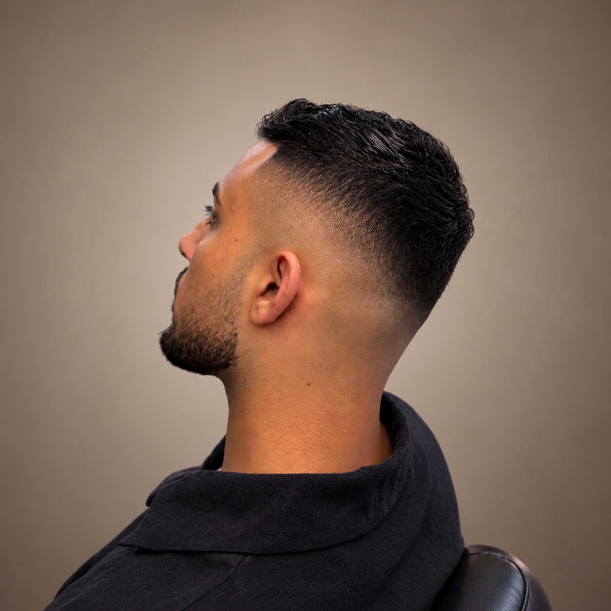

In the
Spotlight
Aziz
Haircut
High Skin Drop Fade
Een strakke high skin drop fade waarbij de overgang achter het oor mooi naar beneden wegloopt. De donkere lengte bovenop zorgt voor contrast en laat de fade extra sterk uitkomen.
← Terug naar mijn werk
01 / 01